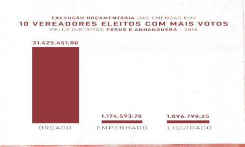

Contato
Coluna
Repositório
Acervo Digital
Memórias do Morro
Intervenções
Sobre o Coletivo
Página Inicial
1/3
2/3

3/3
❮
❯
Confira a revista Memórias do Morro produzida durante a execução do projeto.
Download
" >
Emendas parlamentares. ">
Fique por dentro
Distrito Anhanguera/ Morro Doce
São Paulo - SP
Brazil
anhanguera.lr@gmail.com
@anhagueralutaeresistencia
#anhanguera.lr
© ALR
Design: Baseado em
HTML5 UP
&
TEMPLATED
free hit counter